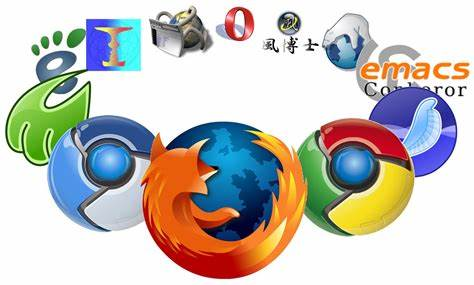
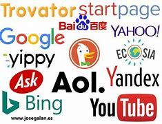
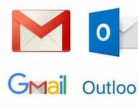

La nube es una colección de computadoras interconectadas con un protocolo
de redes específico.Este protocolo permite la transmisión de datos,
que pueden ser sitios web, correos electrónicos, sonido o video.

Se refiere a un enlace que une la nube con el dispositivo de un usuario en
particular. Existen varios tipos de conexión. Por ejemplo, está la
conexión con cable, directamente enchufada en la PC o notebook; pero
la más utilizada es la conexión inalámbrica, como Wi-Fi.Tanto instalada
internamente como a través de un puerto USB, la conexión Wi-Fi permite
que la computadora se conecte con radio frecuencia a un dispositivo rango relativamente corto. Este dispositivo, a su vez, se conecta a Internet. Otra forma de conexión inalámbrica es bluetooth, tecnología similar al Wi-Fi pero que requiere dos dispositivos para interactuar. El rango es más corto aún. Por último, está la conexión a Internet usando la red celular móvil. Es el programa que se utiliza para acceder a los sitios web. Hace algunos años el más popular era Microsoft Internet Explorer.Hoy en día el Explorador de Windows y su sucesor, Edge (Windows 10/11), han sido desplazados. El navegador más utilizado por los usuarios actualmente es Google Chrome. Los usuarios de Internet son todos aquellos que utilizan esta red, sin importar en qué parte del mundo se encuentren. El usuario accede a la web mediante una computadora, un teléfono móvil con conexión a Internet, TV digital, juegos, computadoras y tabletas, entre otros.Se estima que la cantidad de usuarios de Internet a nivel mundial es de más de tres mil ochocientos millones de personas.El país que tiene más usuarios de Internet es China, seguido por India y los Estados Unidos de América. Son documentos que componen la World Wide Web. Estos documentos están escritos en un lenguaje de hipertexto llamado HTML y son traducidos por el navegador. Las páginas pueden ser estáticas; es decir, que muestran siempre el mismo contenido. Las páginas dinámicas, por su parte, cambian el contenido cada vez que se accede a estas. Una página web no es lo mismo que un website. Un sitio web o website es una colección de páginas; una página web es un documento HTML individual. Son comunidades que se alojan en Internet y permiten que los usuarios interactúen unos con otros en línea. Las redes sociales más populares son Facebook, Twitter, Instagram, LinkedIn y Pinterest, entre otras. Conocidos también como motores de búsqueda, se tratan de almacenadores de servicios web que ofrecen información sobre algún tema que el usuario busque. Para ello, el buscador se nutre de palabras claves o árboles jerárquicos con los que satisfacer las necesidades de la búsqueda del usuario. Algunos de los buscadores más conocidos son Google, Yahoo, DuckDuckGo, Bing, Baidu o Ecosia. Es un servicio que permite a los usuarios de Internet recibir y enviar mensajes. A través de ellos, se pueden enviar prácticamente cualquier tipo de documento, desde texto hasta contenido audiovisual o enlaces web. Algunos de los servicios de correo electrónico más populares son Gmail, Outlook, Yahoo! Mail, iCloud Mail o AOL Mail.3.- Navegador

4.- Usuario
5.- Página web
6.- Redes sociales
7.- Buscadores

8.- Correo electronico
